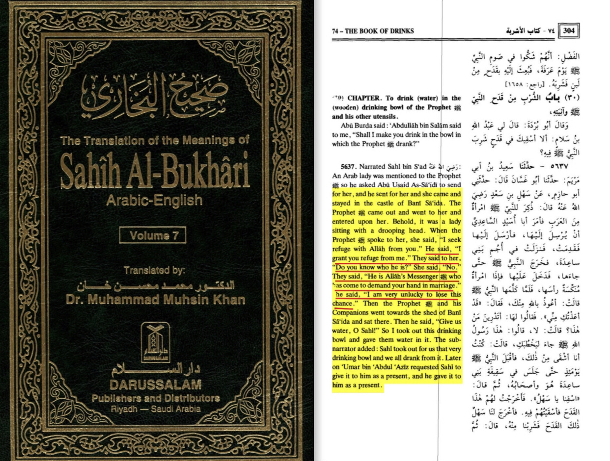

This is due to a hadith found in bukhari 5255
They say how can he do that to a women he has no relation with
translation: “ibn sikin produced a hadith with an authentic isnad on the authority of Aisha she said: al-dahak bin abi sufyan came down to the messenger of Allah he told him do you have interest in the sister of um habibi so the prophet married her and divorced her before entering upon her”
-Source: Al-Isabah fi tamyiz al-sahaba volume 5 page number 334 person number 4189
She herself regretted to get the messenger of Allah away from her in bukhari 5637

Now if he was lustful he wouldn’t have left her